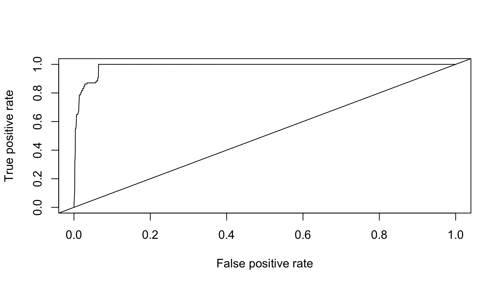
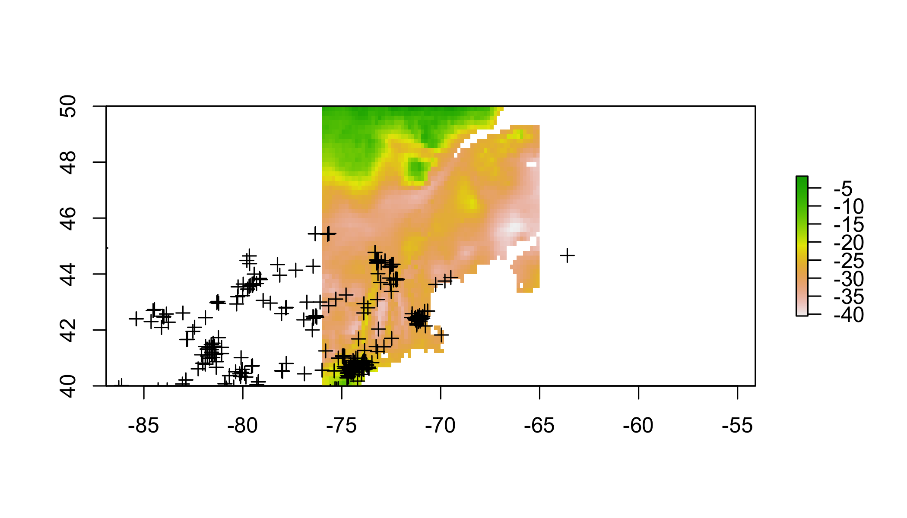
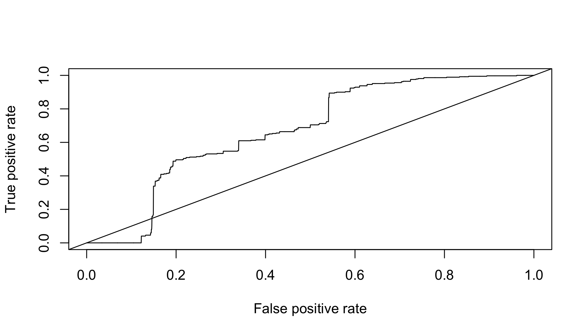
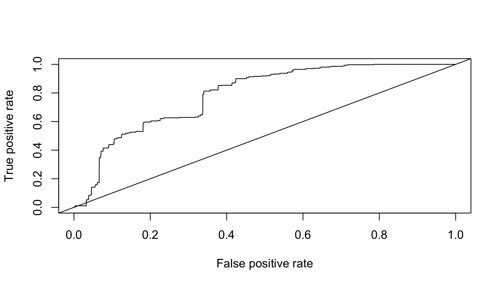

The R Script associated with this page is available here. Download this file and open it (or copy-paste into a new script) with RStudio so you can follow along.
1 Setup
library(spocc)
library(raster)## Loading required package: splibrary(sp)
library(rgdal)## rgdal: version: 1.2-16, (SVN revision 701)
## Geospatial Data Abstraction Library extensions to R successfully loaded
## Loaded GDAL runtime: GDAL 2.1.3, released 2017/20/01
## Path to GDAL shared files: /Library/Frameworks/R.framework/Versions/3.4/Resources/library/rgdal/gdal
## GDAL binary built with GEOS: FALSE
## Loaded PROJ.4 runtime: Rel. 4.9.3, 15 August 2016, [PJ_VERSION: 493]
## Path to PROJ.4 shared files: /Library/Frameworks/R.framework/Versions/3.4/Resources/library/rgdal/proj
## Linking to sp version: 1.2-5library(ROCR)## Loading required package: gplots##
## Attaching package: 'gplots'## The following object is masked from 'package:stats':
##
## lowesslibrary(corrplot)## corrplot 0.84 loadedlibrary(maxnet)
library(spThin)## Loading required package: spam## Loading required package: grid## Spam version 1.4-0 (2016-08-29) is loaded.
## Type 'help( Spam)' or 'demo( spam)' for a short introduction
## and overview of this package.
## Help for individual functions is also obtained by adding the
## suffix '.spam' to the function name, e.g. 'help( chol.spam)'.##
## Attaching package: 'spam'## The following objects are masked from 'package:base':
##
## backsolve, forwardsolve## Loading required package: fields## Loading required package: maps## Loading required package: knitr2 The worst SDM ever
The goal of this section is to use the simplest possible set of operations to build an SDM. There are many packages that will perform much more refined versions of these steps, at the expense that decisions are made behind the scenes, or may be obscure to the user. So before getting into fancier tools, let’s see what the bare minimum looks like.
This is not the simplest possible code, because it requires some familiarity with the internal components of different spatial objects. The tradeoff is that none of the key operations are performed behind the scenes by specialized SDM functions. I realize this is not always pretty, but I hope for that reason it can demonstrate some coding gynmastics for beginners.
2.1 Get presence data
The spocc package allows you to hit a number of the larger databases for presence-only data within R. They provide a number of useful pieces of metadata, if your’e into that sort of this. For this, we’re not; we just want lat and lon.
Decision: You assume the database of choice has sufficiently checked for errors in biology or typos. You know what happens when you assume…
# get presence data
# pres=spocc::occ('Alliaria petiolata',from='gbif',limit=5000) # this can be slow
# so just read in the result of me running this earlier
pres=read.csv('https://cmerow.github.io/YaleBGCCourses/101_assets/AP_gbif.csv')[,c('longitude','latitude')]
pres=pres[complete.cases(pres),] # toss records without coords2.2 Get environmental data
The raster package has a convenience function to get some types of data. To see more about Worldclim
Decision: Worldclim data describes the environmental well in this region. The ‘bioclim’ variables are biologically relevant summaries of climate.
# get climate data
# the raster package has convenience function built in for worldclim
clim=getData('worldclim', var='bio', res=10)The Bioclim variables in clim.us are:
| Varia | ble Description |
|---|---|
| BIO1 | Annual Mean Temperature |
| BIO2 | Mean Diurnal Range (Mean of monthly (max temp – min temp)) |
| BIO3 | Isothermality (BIO2/BIO7) (* 100) |
| BIO4 | Temperature Seasonality (standard deviation *100) |
| BIO5 | Max Temperature of Warmest Month |
| BIO6 | Min Temperature of Coldest Month |
| BIO7 | Temperature Annual Range (BIO5-BIO6) |
| BIO8 | Mean Temperature of Wettest Quarter |
| BIO9 | Mean Temperature of Driest Quarter |
| BIO10 | Mean Temperature of Warmest Quarter |
| BIO11 | Mean Temperature of Coldest Quarter |
| BIO12 | Annual Precipitation |
| BIO13 | Precipitation of Wettest Month |
| BIO14 | Precipitation of Driest Month |
| BIO15 | Precipitation Seasonality (Coefficient of Variation) |
| BIO16 | Precipitation of Wettest Quarter |
| BIO17 | Precipitation of Driest Quarter |
| BIO18 | Precipitation of Warmest Quarter |
| BIO19 | Precipitation of Coldest Quarter |
2.3 Choose domain
The ‘domain’ is the region of interest. It can be a political region, a biome, a park, a watershed, etc. It should include locations where the species is present and absent. Choosing relevent locations were the species does not occur is part of the art of presence-only modeling (see slides above).
Decision: We are only asking about invasion in New England, so we constrain the domain to a bounding box around New England
# choose domain (just the Eastern US)
clim.us=raster::crop(clim,c(-76,-65,40,50)) # trim to a smaller region
plot(clim.us[[1]]) # plot just the 1st variable to see domain
2.4 Prep data
Many climate variables are highly correlated with one another, which can confound statistical analyses.
Decision: Correlated predictors can make it difficult to interpret model coefficients or response curves. So we’ll remove the most correlated predictores
# check for correlated predictors
cors=cor(values(clim.us),use='complete.obs') # evaluate correlations
corrplot(cors,order = "AOE", addCoef.col = "grey",number.cex=.6) # plot correlations
This plot nicely clumps groups of similar variables. Choose a representative variable from each clump.
clim=clim[[c("bio1","bio2","bio13","bio14")]] # keep just reasonably uncorrelated ones
clim.us=clim.us[[c('bio1','bio2','bio13','bio14')]] # keep just reasonably uncorrelated ones
cors=cor(values(clim.us),use='complete.obs') # evaluate correlations
corrplot(cors,order = "AOE", addCoef.col = "grey",number.cex=.6)# plot correlations
Ok, tolerable. Some people advocate that correlations should be <0.7. I prefer lower, like 0.3, or 0.4 because I often forecast (as we’ll do below) and one must assume that those correlations hold in new scenarios hold to make meaningful forecasts.
Scaling each predictor to zero mean and unit variance is a common statistical approach to make sure the coefficents you’ll estimate are comparable (on the same scale) and prevents a few other wonky things from possibly happening.
# scale each predictor to mean=0, variance=1
clim.means=apply(values(clim.us),2,mean,na.rm=T) # means
clim.sds=apply(values(clim.us),2,sd,na.rm=T) # standard devations
name=names(clim.us)
values(clim.us)=sapply(1:nlayers(clim.us),function(x) (values(clim.us)[,x]-clim.means[x])/clim.sds[x])
# z-scores
names(clim.us)=name
# get environment at pres points
coordinates(pres)=c('longitude','latitude') # set coords to allow extraction (next line)
pres.data=data.frame(raster::extract(clim.us,pres)) # extract data at pres locations
coordinates(pres.data)=coordinates(pres) # make sure the data have coords associated
pres.data=pres.data[complete.cases(pres.data@data),] # toss points without env dataplot(clim.us) # view 
2.5 Sample background
In presence-only (PO) modeling, where absence data do not exist, so-called ‘background’ (==jargon) points are used. In PO models, one compares the environmental conditions at occupied locations (presences) to the conditions available in the region of interest. This corresponds to ‘use-avialability’ (==jargon) analysis and asks, ‘how much does the species use environment x in proportion to its availability?’ For example, if a landscape contains 10 cells with temperature < 20 degrees, and the species uses all of them, you would infer that cold locations are important (10 are used and 10 are available). In contrast, if the lanscape had 1000 cells with temperature <20 degrees, you’d infer the opposite, that cold cells are probably avoided (10 are used and 1000 are available). This is the essence of (this type of) presence-only modeling.
Decision: The species is equally likely to be anywhere on the landscapes, so we’ll compare presences to a random sample of background points.
(There’s a lot of subtlties about background selection, just go with it for now…)
## save the data table
# sample background (to compare against presences)
all.background=which(complete.cases(values(clim.us))) # find cells on land
bg.index=sample(all.background,min(length(all.background),10000)) # take random sample of land
bg.data=data.frame(values(clim.us)[bg.index,]) # get the env at these cells
coordinates(bg.data)=coordinates(clim.us)[bg.index,] # define spatial object2.6 Statistical model
Decision: Linear and quadratic terms are sufficient to describe the species’ response to the environment.
Next, combine the data into a convenient form and specify a formula for the regression.
# prep data for use in glm()
all.data=rbind(data.frame(pres=1,pres.data@data),data.frame(pres=0,bg.data@data)) # line up pres & bg
# specify formula (quickly to avoid writing out every name)
(form=paste('pres/weight~', # lhs of eqn.
paste(names(all.data)[-1], collapse = " + "),'+', # linear terms
paste("I(", names(all.data)[-1], "^2)", sep = "", collapse = " + "))) # qudratic terms## [1] "pres/weight~ bio1 + bio2 + bio13 + bio14 + I(bio1^2) + I(bio2^2) + I(bio13^2) + I(bio14^2)"There are some subtle differences here compared to a regular old GLM. These weights allow one to fit a Poisson point process model with the glm function. If this sort of thing excites you, this paper describes point process models well, and the appendix describes this weighting scheme. If it doesn’t, just pretend this is a regular GLM for now.
all.data$weight = all.data$pres + (1 - all.data$pres) * 10000 # these allow you to fit a Point Process
mod.worst=glm(form,data=all.data,family=poisson(link='log'),weights=weight) # fit the model
summary(mod.worst) # show coefficients##
## Call:
## glm(formula = form, family = poisson(link = "log"), data = all.data,
## weights = weight)
##
## Deviance Residuals:
## Min 1Q Median 3Q Max
## -4.0280 -0.2408 -0.0706 -0.0308 5.1147
##
## Coefficients:
## Estimate Std. Error z value Pr(>|z|)
## (Intercept) -15.37924 0.30294 -50.766 < 2e-16 ***
## bio1 2.58714 0.30915 8.369 < 2e-16 ***
## bio2 0.88788 0.07252 12.243 < 2e-16 ***
## bio13 0.32046 0.09170 3.495 0.000475 ***
## bio14 -0.96095 0.09545 -10.067 < 2e-16 ***
## I(bio1^2) 0.21355 0.10382 2.057 0.039705 *
## I(bio2^2) 0.23243 0.03706 6.272 3.57e-10 ***
## I(bio13^2) 0.22246 0.06308 3.526 0.000421 ***
## I(bio14^2) 0.41497 0.05867 7.073 1.52e-12 ***
## ---
## Signif. codes: 0 '***' 0.001 '**' 0.01 '*' 0.05 '.' 0.1 ' ' 1
##
## (Dispersion parameter for poisson family taken to be 1)
##
## Null deviance: 8340.1 on 3353 degrees of freedom
## Residual deviance: 6823.3 on 3345 degrees of freedom
## AIC: 7579.3
##
## Number of Fisher Scoring iterations: 172.7 Inspect response curves
Response curves describe how the species’ occurrence (y-axis) depends on a single climate variable (x-axis). There’s one for each environmental variable in the model. Usually this is done by making predictions with all the other predictors set at their means. Most packages have 1-liners to make this instead, but this builds more character.
# check response curves
# these marginal response curves are evaluated at the means of the non-focal predictor
clim.ranges=apply(values(clim.us),2,range,na.rm=T) # upper and lower limits for each variable
dummy.mean.matrix=data.frame(matrix(0,ncol=nlayers(clim.us),nrow=100)) #makes prediction concise below
names(dummy.mean.matrix)=colnames(clim.ranges) # line up names for later reference
response.curves=lapply(1:nlayers(clim.us),function(x){ # loop over each variable
xs=seq(clim.ranges[1,x],clim.ranges[2,x],length=100) # x values to evaluate the curve
newdata=dummy.mean.matrix # data frame with right structure
newdata[,x]=xs # plug in just the values for the focal variable that differ from mean
ys=predict(mod.worst,newdata=newdata) # predictions
return(data.frame(xs=xs,ys=ys)) # define outputs
})# ignore warningsCheck out the list of lists that store this.
str(response.curves) #structure of the object used for plotting## List of 4
## $ :'data.frame': 100 obs. of 2 variables:
## ..$ xs: num [1:100] -1.79 -1.74 -1.7 -1.65 -1.61 ...
## ..$ ys: num [1:100] -19.3 -19.2 -19.2 -19.1 -19 ...
## $ :'data.frame': 100 obs. of 2 variables:
## ..$ xs: num [1:100] -4.75 -4.68 -4.61 -4.54 -4.47 ...
## ..$ ys: num [1:100] -14.3 -14.4 -14.5 -14.6 -14.7 ...
## $ :'data.frame': 100 obs. of 2 variables:
## ..$ xs: num [1:100] -2.82 -2.76 -2.7 -2.64 -2.58 ...
## ..$ ys: num [1:100] -14.5 -14.6 -14.6 -14.7 -14.7 ...
## $ :'data.frame': 100 obs. of 2 variables:
## ..$ xs: num [1:100] -2.52 -2.46 -2.4 -2.34 -2.28 ...
## ..$ ys: num [1:100] -10.3 -10.5 -10.7 -10.9 -11 ... # plot the curves
par(mfrow=c(2,2),mar=c(4,5,.5,.5)) # # rows and cols for plotting
for(i in 1:nlayers(clim.us)){ # loop over layers
plot(response.curves[[i]]$xs,response.curves[[i]]$ys, # xs and ys
type='l', # line plot
bty='n',las=1, # decorations
ylim=c(-20,20), # y axis limits
xlab=colnames(clim.ranges)[i],ylab='occurence rate') # axis labels
pres.env.range=range(pres.data[names(clim.us)[i]]@data) # find limits of fitting data
abline(v=pres.env.range,col='red',lty=2) # plot limits of fitting data
}
2.8 Map predictions
Decision: When predicting, its ok to extrapolate beyond
# predict to US
pred.r=raster::predict(clim.us,mod.worst, index=1,type="response")
pred.r=pred.r/sum(values(pred.r),na.rm=T) # normalize prediction (sum to 1)
plot(log(pred.r)) # plot raster
plot(pres,add=T) # plot points
2.9 Evaluate performance
Reciever-operator characteristic (ROC) curves are often used to evaluation binary (presence/absence) predictions. Since the predictions are continuous (see previous map), we need to choose a threshold that distinguishes presence from absence. The ROC curve summarizes the results for all possible thresholds. Each point corresponds to a threshold, the y-axis describes the proportion of presences correctly predicted while the x-axis describes the proportion of background points where presence is predicted. There’s a clear tradeoff in getting a lot of presences right without predicting presence everywhere. The AUC (area under the curve) describes the area under the ROC curve - a value of 1 is the best, and a value of 0.5 means you may as well flip a coin. More here.
# evaluate
pred.at.fitting.pres=raster::extract(pred.r,pres.data) # get predictions at pres locations
pred.at.fitting.bg=raster::extract(pred.r,bg.data) # get predictions at background locations
rocr.pred=ROCR::prediction(predictions=c(pred.at.fitting.pres,pred.at.fitting.bg),
labels=c(rep(1,length(pred.at.fitting.pres)),rep(0,length(pred.at.fitting.bg)))) # define the prediction object needed by ROCR
perf.fit=performance(rocr.pred,measure = "tpr", x.measure = "fpr") # calculate perfomance
plot(perf.fit) # plot ROC curve
abline(0,1) # 1:1 line indicate random predictions 
(auc_ROCR <- performance(rocr.pred, measure = "auc")@y.values[[1]]) # get AUC## [1] 0.94129322.10 Transfer to new conditions
A common goal of SDMing is to transfer the models to new locations.
Decision: The occurrence-environment relationship fit in New England also describes the species response to environment in Europe.
# transfer to Europe
# choose domain (just europe)
clim.eu=raster::crop(clim,c(-10,55,30,75))
values(clim.eu)=sapply(1:nlayers(clim.eu),function(x) (values(clim.eu)[,x]-clim.means[x])/clim.sds[x])
names(clim.eu)=names(clim.us)
# z-scores (to make values comparable to the scaeld values for fitting)
transfer.r=raster::predict(clim.eu,mod.worst, index=1,type="response")
transfer.r=transfer.r/sum(values(transfer.r),na.rm=T) # normalize prediction (sum to 1)
plot(log(transfer.r)) # plot preds
plot(pres,add=T) # plot presences 
3 Improvements
3.1 Sampling bias
3.1.1 Sample background
Decision: Presences are most likelt to be observed where other specie sampled with the same protocol or are taxonomically similar were sampled.
The data in bias.bg are the result of extracting the coordinates of all 187 species observed in the Invasive Plant Atlas of New England (IPANE) data base.
bias.bg=read.csv('/Users/ctg/Dropbox/Projects/Workshops/YaleBGCCourses/101_assets/Bias_IPANE_allPoints.csv')[,-1]
coordinates(bias.bg)=c(1,2)
bias.bg.data=data.frame(raster::extract(clim.us,bias.bg))
coordinates(bias.bg.data)=coordinates(bias.bg)
bias.bg.data=bias.bg.data[complete.cases(bias.bg.data@data),]# prep data for use in glm()
all.data=rbind(data.frame(pres=1,pres.data@data),data.frame(pres=0,bias.bg.data@data))
# specify formula (quickly to avoid writing out every name)
(form=paste('pres/weight~', # lhs of eqn.
paste(names(all.data)[-1], collapse = " + "),'+', # linear terms
paste("I(", names(all.data)[-1], "^2)", sep = "", collapse = " + "))) # qudratic terms## [1] "pres/weight~ bio1 + bio2 + bio13 + bio14 + I(bio1^2) + I(bio2^2) + I(bio13^2) + I(bio14^2)"From this point on, the code is exactly the same as the previous example, except that the model is given a new name, mod.bias instead of mod.worst
3.2 Statistical model
all.data$weight = all.data$pres + (1 - all.data$pres) * 10000 # these allow you to fit a Point Process
mod.bias=glm(form,data=all.data,family=poisson(link='log'),weights=weight) # fit the model
summary(mod.bias) # show coefficients##
## Call:
## glm(formula = form, family = poisson(link = "log"), data = all.data,
## weights = weight)
##
## Deviance Residuals:
## Min 1Q Median 3Q Max
## -1.7729 -0.2560 -0.1099 -0.0320 6.3131
##
## Coefficients:
## Estimate Std. Error z value Pr(>|z|)
## (Intercept) -17.31494 0.28372 -61.028 < 2e-16 ***
## bio1 -5.04764 0.31736 -15.905 < 2e-16 ***
## bio2 2.59214 0.07989 32.446 < 2e-16 ***
## bio13 1.15896 0.09228 12.560 < 2e-16 ***
## bio14 -2.61444 0.07388 -35.389 < 2e-16 ***
## I(bio1^2) 5.08107 0.12202 41.641 < 2e-16 ***
## I(bio2^2) 0.66814 0.05442 12.277 < 2e-16 ***
## I(bio13^2) 0.79904 0.10116 7.899 2.81e-15 ***
## I(bio14^2) -0.08801 0.08161 -1.078 0.281
## ---
## Signif. codes: 0 '***' 0.001 '**' 0.01 '*' 0.05 '.' 0.1 ' ' 1
##
## (Dispersion parameter for poisson family taken to be 1)
##
## Null deviance: 8805.4 on 5976 degrees of freedom
## Residual deviance: 5167.8 on 5968 degrees of freedom
## AIC: 5923.8
##
## Number of Fisher Scoring iterations: 183.3 Inspect response curves
# check response curves
# these marginal response curves are evaluated at the means of the non-focal predictor
clim.ranges=apply(values(clim.us),2,range,na.rm=T) # upper and lower limits for each variable
dummy.mean.matrix=data.frame(matrix(0,ncol=nlayers(clim.us),nrow=100)) #makes prediction concise below
names(dummy.mean.matrix)=colnames(clim.ranges) # line up names for later reference
response.curves=lapply(1:nlayers(clim.us),function(x){ # loop over each variable
xs=seq(clim.ranges[1,x],clim.ranges[2,x],length=100) # x values to evaluate the curve
newdata=dummy.mean.matrix # data frame with right structure
newdata[,x]=xs # plug in just the values for the focal variable that differ from mean
ys=predict(mod.bias,newdata=newdata) # predictions
return(data.frame(xs=xs,ys=ys)) # define outputs
})# ignore warningsstr(response.curves) #structure of the object used for plotting## List of 4
## $ :'data.frame': 100 obs. of 2 variables:
## ..$ xs: num [1:100] -1.79 -1.74 -1.7 -1.65 -1.61 ...
## ..$ ys: num [1:100] 7.92 6.89 5.88 4.89 3.92 ...
## $ :'data.frame': 100 obs. of 2 variables:
## ..$ xs: num [1:100] -4.75 -4.68 -4.61 -4.54 -4.47 ...
## ..$ ys: num [1:100] -14.5 -14.8 -15.1 -15.3 -15.6 ...
## $ :'data.frame': 100 obs. of 2 variables:
## ..$ xs: num [1:100] -2.82 -2.76 -2.7 -2.64 -2.58 ...
## ..$ ys: num [1:100] -14.2 -14.4 -14.6 -14.8 -15 ...
## $ :'data.frame': 100 obs. of 2 variables:
## ..$ xs: num [1:100] -2.52 -2.46 -2.4 -2.34 -2.28 ...
## ..$ ys: num [1:100] -11.3 -11.4 -11.6 -11.7 -11.8 ... # plot the curves
par(mfrow=c(2,2),mar=c(4,5,.5,.5)) # # rows and cols for plotting
for(i in 1:nlayers(clim.us)){ # loop over layers
plot(response.curves[[i]]$xs,response.curves[[i]]$ys,
type='l',bty='n',las=1,xlab=colnames(clim.ranges)[i],ylab='occurence rate',ylim=c(-20,20))
pres.env.range=range(pres.data[names(clim.us)[i]]@data) # find limits of fitting data
abline(v=pres.env.range,col='red',lty=2) # plot limits of fitting data
}
3.3.1 Map predictions
# predict to US
pred.r=raster::predict(clim.us,mod.bias, index=1,type="response")
pred.r=pred.r/sum(values(pred.r),na.rm=T) # normalize prediction (sum to 1)
plot(log(pred.r)) # plot raster
plot(pres,add=T) # plot points
3.3.2 Evaluate performance
# evaluate
pred.at.fitting.pres=raster::extract(pred.r,pres.data) # get predictions at pres locations
pred.at.fitting.bg=raster::extract(pred.r,bg.data) # get predictions at background locations
rocr.pred=ROCR::prediction(predictions=c(pred.at.fitting.pres,pred.at.fitting.bg),
labels=c(rep(1,length(pred.at.fitting.pres)),rep(0,length(pred.at.fitting.bg)))) # define the prediction object needed by ROCR
perf.fit=performance(rocr.pred,measure = "tpr", x.measure = "fpr") # calculate perfomance
plot(perf.fit) # plot ROC curve
abline(0,1) # 1:1 line indicate random predictions 
(auc_ROCR <- performance(rocr.pred, measure = "auc")@y.values[[1]]) # get AUC## [1] 0.6737413Oh, Snap! Not nearly as good as the model that ignored bias. This is common when accounting for bias; you’ve removed something that structured the observations from the model. So you evaluation on the fitting data will be worse. Performance on new data sets will often be better (conditional on the rest of the model being well designed), so long as those don’t suffer from the same sampling bias patterns.
3.4 Other algorithms: glmnet
3.5 Statistical model
mod.maxnet=maxnet(p=all.data[,'pres'],data=all.data[,c("bio1","bio2","bio13","bio14")])
summary(mod.maxnet) # show coefficients## Length Class Mode
## a0 200 -none- numeric
## beta 81200 dgCMatrix S4
## df 200 -none- numeric
## dim 2 -none- numeric
## lambda 200 -none- numeric
## dev.ratio 200 -none- numeric
## nulldev 1 -none- numeric
## npasses 1 -none- numeric
## jerr 1 -none- numeric
## offset 1 -none- logical
## classnames 2 -none- character
## call 8 -none- call
## nobs 1 -none- numeric
## betas 24 -none- numeric
## alpha 1 -none- numeric
## entropy 1 -none- numeric
## penalty.factor 406 -none- numeric
## featuremins 406 -none- numeric
## featuremaxs 406 -none- numeric
## varmin 4 -none- numeric
## varmax 4 -none- numeric
## samplemeans 4 -none- list
## levels 4 -none- listFrom this point on, the code is exactly the same as the previous example, except that the model is given a new name, mod.maxnet instead of mod.bias
3.6 Inspect response curves
# check response curves
# these marginal response curves are evaluated at the means of the non-focal predictor
clim.ranges=apply(values(clim.us),2,range,na.rm=T) # upper and lower limits for each variable
dummy.mean.matrix=data.frame(matrix(0,ncol=nlayers(clim.us),nrow=100)) #makes prediction concise below
names(dummy.mean.matrix)=colnames(clim.ranges) # line up names for later reference
response.curves=lapply(1:nlayers(clim.us),function(x){ # loop over each variable
xs=seq(clim.ranges[1,x],clim.ranges[2,x],length=100) # x values to evaluate the curve
newdata=dummy.mean.matrix # data frame with right structure
newdata[,x]=xs # plug in just the values for the focal variable that differ from mean
ys=predict(mod.maxnet,newdata=newdata) # predictions
return(data.frame(xs=xs,ys=ys)) # define outputs
})# ignore warnings # plot the curves
par(mfrow=c(2,2),mar=c(4,5,.5,.5)) # # rows and cols for plotting
for(i in 1:nlayers(clim.us)){ # loop over layers
plot(response.curves[[i]]$xs,response.curves[[i]]$ys,
type='l',bty='n',las=1,xlab=colnames(clim.ranges)[i],ylab='occurence rate',ylim=c(-20,20))
pres.env.range=range(pres.data[names(clim.us)[i]]@data) # find limits of fitting data
abline(v=pres.env.range,col='red',lty=2) # plot limits of fitting data
}
3.6.1 Map predictions
# predict to US
pred.r=raster::predict(clim.us,mod.maxnet, index=1,type="exponential") # note 'type' differs from glm
pred.r=pred.r/sum(values(pred.r),na.rm=T) # normalize prediction (sum to 1)
plot(log(pred.r)) # plot raster
plot(pres,add=T) # plot points
3.6.2 Evaluate performance
# evaluate
pred.at.fitting.pres=raster::extract(pred.r,pres.data) # get predictions at pres locations
pred.at.fitting.bg=raster::extract(pred.r,bg.data) # get predictions at background locations
rocr.pred=ROCR::prediction(predictions=c(pred.at.fitting.pres,pred.at.fitting.bg),
labels=c(rep(1,length(pred.at.fitting.pres)),rep(0,length(pred.at.fitting.bg)))) # define the prediction object needed by ROCR
perf.fit=performance(rocr.pred,measure = "tpr", x.measure = "fpr") # calculate perfomance
plot(perf.fit) # plot ROC curve
abline(0,1) # 1:1 line indicate random predictions 
(auc_ROCR <- performance(rocr.pred, measure = "auc")@y.values[[1]]) # get AUC## [1] 0.789735Great, we’ve recovered some of the predictive accuracy lost when the sampling bias was factored out. By picking up more complex responses, we’re better able to describe the distribution. An important caveat is that we should check for overfitting, wherein we’ve fit to idiosyncracies of the particular fitting data set. To check this, we’d need to evaluate on independent data, which we won’t get to here but is a critical step on any SDM you intend to publish.
3.7 Other options
Within the framework described above:
- Thin presences to remove spatial autocorrelation
- Subsample presences to evaluate model on independent data (e.g., k-fold cross validation)
- Use remotely sensed data (removing artefacts of interpolation)
- More informative performance statistics (Boyce, partial AUC)
- Other algorithms (GAMs, Tree-based methods, Envelope methods)
- Model selection to find better suites of predictors
Somewhat different frameworks:
- Model space explicitly (accounting for spatial autocorrelation)
- Borrow strength from other species (Joint SDMs)
- Bayesian models for more complete treatment of uncertainty or hierarchical structure, among other things
- Ensemble approaches to combine the results of multiple models
- Combine data from different parts of the distribution (e.g. native range)